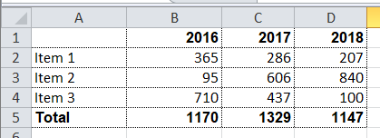

Producing Spreadsheet Reports Using Xylophone
There are tasks in the IT sphere that look totally unattractive against the background of the successes in big data, machine learning, blockchainand other trendy breakthroughs, but have nonetheless remained topical for an entire army of developers over decades. The case at hand is that of the ancient task of forming and downloading spreadsheet (mostly MS Excel) documents, which has been encountered by anyone who has ever written business apps.
What are the general options for forming Excel files?
-
VBA-macros. These days the idea of using macros is most often inappropriate for security reasons.
-
Automating Excel by an external program via API. This requires the presence of Excel on the same machine as the program that’s generating Excel reports. This option would have worked in the good old days, clients were mostly fat and were coded as desktop software. This option never was particularly fast or reliable, and it’s hardly an option under the current circumstances.
-
Direct generation of an XML-Excel file. As we know, Excel supports the XML document format, which may potentially be generated/modified by any XML-supporting means. This file may be saved with an .xls extension, even though it isn’t, strictly speaking, an xls-file. Excel opens it with no trouble at all. This approach is rather popular, but let’s note one of its disadvantages – the fact that any solution based on direct editing of the XML-Excel format is a one-time hack that lacks consistency.
-
Finally, generation of Excel files is possible using open source libraries, Apache POI being the best-known one. Apache POI developers have put great effort into the reverse engineering of binary formats for MS Office documents, and have been maintaining and developing this library for many years. The result of this reverse engineering is used in Open Office to implement the option of saving documents in MS Office-compatible formats, among other things.
I believe that the last of the above-mentioned methods is currently preferable for generating MS Office-compatible documents. On the one hand, it doesn’t require the installation of any proprietary software on the server, and, on the other hand, it offers a powerful API that allows one to use all of the functional capabilities offered by MS Office.
However, there are also disadvantages to using Apache POI directly. The first is that Apache POI is a Java library, and if your app isn’t written in one of the JVM languages, you probably won’t be able to use it. Secondly, it’s a low-level library that works with concepts like ‘cell,’ ‘column,’ ‘font.’ That’s why a straightforwardly coded document generation procedure quickly turns into bloated and barely readable code, which makes no differentiation between data and view models, is hard to change, and is altogether embarrassing. Perfect reason to delegate this task to the least experienced developer – let him poke around with it.
But everything can be totally different. The LGPL-licensed, Apache POI-based Xylophone project is founded on the idea with an approximately 15-year history. In the projects I’d participated in, it was used in combination with a wide range of platforms and languages, and the number of reporting form varieties that have been produced with its assistance in the most diverse projects must be going on thousands. It is a Java project, which can function both as a command prompt utility, and as a library (if your code is written in a JVM language, you can use it as a Maven dependency).
Xylophone implements the principle of differentiating data models and their representation. Data should be formed in an XML format (with no need to worry about cells, fonts anddividing lines), while Xylophone will form the results using an Excel template and a descriptor that describes your XML file’s traversal procedure, as shown on the diagram:
The document template (xls/xlsx template) looks approximately as follows:
As a rule, a blank template is provided by the client himself. An engaged client will be happy to participate in the creation of a template: starting with selection of an appropriate form and up to the font sizes and the width of dividing lines. The advantage of a template is that small changes can be easily made when the report development has already been completed.
When the 'visual design' work has been completed, all that’s left for the developer to do is to:
-
Create a procedure for outputting of the required data in the XML format.
-
Create a descriptor that describes the procedure for your XML file’s traversal and copying template fragments to the resulting report.
-
Ensure the cells’ link to the XML file’s elements via XPath expressions.
Everything is more or less clear with XML output — it’s sufficient to choose an adequate XML representation of the data required to fill the form. What’s a descriptor?
If there were no recurring elements in the form that we are creating (such as the number of lines in shipping documents, which differs from one to the other), the descriptor would look as follows:
<element name="root">
<output range="A1:Z100"/>
</element>root here stands for the root element of our XML data file, and the A1:Z100 range is a rectangular range of cells from the template, which will be copied into the results. Meanwhile, as it can be observed in the previous illustration, substitution fields, the values of which are substituted for the data from the XML file, have the format ~{Xpath-expression} (tilde, opening brace, XPath expression relative to the current XML context, closing brace).
What do we do if recurring elements are required in our report? You can naturally represent them as recurring XML elements, and the descriptor helps to appropriately iterate them. The repetition of elements in the report may have either a vertical direction (for instance, when we insert lines into a packing list), or a horizontal one (when we insert the columns in an analytical report). We can use XML element nesting in order to reflect the repetitive report element nesting of any given degree of depth.
(Cells that will form the top left corner of a subsequent rectangular fragment that will be joined by the report generator, are marked by red rectangles.)
There’s another possible type of repetitive elements: sheets in an Excel workbook. It is also possible to generate one Excel workbook sheet per XML element.
Let’s examine a slightly more complicated example. For instance, we need to obtain a summary report, as in the example below:

Let the range of years for downloading be selected by the user, that’s why both lines and columns are dynamically generated in this report. XML-representation of the data for such a report may look as follows:
<?xml version="1.0" encoding="UTF-8"?>
<report>
<column year="2016"/>
<column year="2017"/>
<column year="2018"/>
<item name="Item 1">
<year amount="365"/>
<year amount="286"/>
<year amount="207"/>
</item>
<item name="Item 2">
<year amount="95"/>
<year amount="606"/>
<year amount="840"/>
</item>
<item name="Item 3">
<year amount="710"/>
<year amount="437"/>
<year amount="100"/>
</item>
<totals>
<year amount="1170"/>
<year amount="1329"/>
<year amount="1147"/>
</totals>
</report>We are free to select tag names to our taste, the structure may also be arbitrary, with regard for the ease of conversion into a report. For example, I usually put the values that are output to a sheet down as attributes, because it simplifies XPath expressions (it’s convenient when they have the @attributename form).
A template for such a report will look as follows (compare the XPath expressions with the name of the attributes of corresponding tags):
Now’s the time for the most interesting part: creating a descriptor. Since it is an almost completely dynamically generated report, the descriptor is rather complicated, in reality (when all we have is the document’s header, its lines and the footer), everything is much simpler. Here is the descriptor required in this case:
<?xml version="1.0" encoding="UTF-8"?>
<element name="report">
<!-- Create a worksheet -->
<output worksheet="Report" sourcesheet="Sheet1"/>
<!-- Column headers in left-to-right direction -->
<iteration mode="horizontal">
<element name="(before)">
<!-- Empty cell in top left corner of the table -->
<output range="A1"/>
</element>
<element name="column">
<output range="B1"/>
</element>
</iteration>
<!-- Rows output: top-to-bottom direction-->
<iteration mode="vertical">
<element name="item">
<!-- Left-to-right inside the row -->
<iteration mode="horizontal">
<element name="(before)">
<!-- Row header -->
<output range="A2"/>
</element>
<!-- After the header, row data in left-to-right direction -->
<element name="year">
<output range="B2"/>
</element>
</iteration>
</element>
</iteration>
<iteration>
<element name="totals">
<iteration mode="horizontal">
<element name="(before)">
<!-- Row header -->
<output range="A3"/>
</element>
<!-- After the header, row data in left-to-right direction -->
<element name="year">
<output range="B3"/>
</element>
</iteration>
</element>
</iteration>
</element>The descriptor’s elements are described in their entirety in the documentation. To make it short, the descriptor’s main elements have the following meanings:
-
element— transition to the XML file element reading mode. May either be a descriptor root element, or be inside aniterationelement. Various element filters may be set up using thenameattribute, such as:-
name="foo"— elements with the foo tag name. -
name="*"— all elements. -
name="tagname[@]"— elements with a specific name and attribute value. -
name="(before)",name="(after)"— “virtual” elements that precede an iteration and conclude an iteration.
-
-
iteration— transition to the iteration mode. May only be located within anelement. Different parameters may be set, for instance.-
mode="horizontal"— horizontal output mode (vertical be default). -
index=0— restrict the iteration exclusively to the first encountered element.
-
-
output— transition to output mode. Main attributes are as follows:-
sourcesheet— a sheet of the template book that is the source of output range. If it’s not defined, the current (last used) sheet is used. -
range– template range that’s copied into the resulting document, i.e. “A1:M10”, or “5:6”, or “C:C”. (Using line ranges of the “5:6” type in the horizontal mode, or column ranges of the “C:C” type in the vertical mode will lead to error). -
sheet– if it’s defined, a new sheet is created in the output file, and output position is shifted to the A1 cell of this sheet. The value of this attribute, equal to the constant or the XPath expression, is substituted in the name of the new sheet.
-
Actually, there are far more different options in the descriptor, please refer to the documentation.
Well, it’s time to download Xylophone and start forming the report. Get the archive from Maven Central (NB – there may be later versions available as you’re reading this article). There’s a shell script in the /bin folder, and if you launch it without parameters, you’ll see a hint on command prompt parameters. In order to achieve a result, you need to feed all the prepared ingredients to xylophone:
xylophone -data testdata.xml -template template.xlsx -descr descriptor.xml -out report.xlsxLet’s open the report.xlsx file and make sure that we have got precisely what we need:
Since the ru.curs:xylophone library is available in Maven Central under the LGPL license, it can used seamlessly in programs written in any JVM language. The Groovy language provides the most compact case study, the code is self-explanatory:
@Grab('ru.curs:xylophone:6.1.10')
import ru.curs.xylophone.XML2Spreadsheet
baseDir = '.'
new File(baseDir, 'testdata.xml').withInputStream {
input ->
new File(baseDir, 'report.xlsx').withOutputStream {
output ->
XML2Spreadsheet.process(input,
new File(baseDir, 'descriptor.xml'),
new File(baseDir, 'template.xlsx'),
false, output)
}
}
println 'Done.'The XML2Spreadsheet class has several overloaded versions of the process static method, but all of them come down to the transfer of the very same ‘ingredients’ required to form a report.
An important option that I haven’t mentioned yet is the opportunity to choose between the DOM and SAX parsers at the stage of parsing a file with XML data. As we know, the DOM parser uploads the entire file to memory, constructs its objective representation and allows you to traverse its contents in a random manner (including the repeated return to the same element). The SAX parser never places the entire file in memory, instead, it processes it as a ‘stream’ of elements, without the option of returning to the same element.
Using the SAX mode in Xylophone (via the command prompt option –sax, or by setting the value of the useSax parameter of XML2Spreadsheet.process(..) method to true) may prove crucially useful in cases when very large files need to be generated. Due to the speed and cost efficiency of SAX parsing the file generation speed increase several-fold. This comes at a price of small restrictions on the descriptor (described in the documentation), but in the majority of cases the reports satisfy these requirements, which is why I’d recommend you use the SAX-mode anywhere you can.
I hope that you’ll like this way of uploading data to Excel via Xylophone, and it will save you time and some nerve cells – as it did for us.
And finally some links for the road:
-
source code: github.com/CourseOrchestra/xylophone
-
documentation: courseorchestra.github.io/xylophone